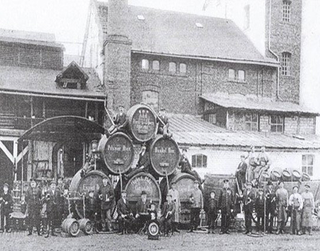

Lịch sử ra đời và xuất xứ của Strongbow Cider
STRONGBOW CIDER chính thức ra mắt từ những năm 1960, thừa hưởng toàn bộ tinh hoa từ Bulmers - một trong những thương hiệu Cider lâu đời nhất, đã mang đến cho Strongbow một “bản sắc” cider hoàn toàn khác biệt. Trong những chuyến chinh phạt khắp châu Âu vào những năm 55 TCN, có lẽ ít người biết rằng đại đế Caesar đặc biệt hứng thú với một chất men độc đáo được người Celtic (thuộc Anh) chế biến từ táo. Ông còn say sưa tìm tòi để tìm ra phương pháp lên men táo hiệu quả nhất để tận hưởng trọn vẹn hương vị của loại thức uống hấp dẫn này.
Từng có thời điểm strongbow...Từng có thời điểm chất men từ táo độc đáo này đã chiếm lĩnh toàn châu Âu cách đây hàng trăm năm. Thậm chí từ thế kỉ XI, Anh quốc trở thành một kho chứa nguyên liệu khổng lồ với vô số vườn táo được trồng chỉ để lên men làm thức uống. Song mãi đến năm 1896, Cider mới chính thức bước vào cuộc chơi kinh doanh khi Woodpecker ra mắt và trở thành nhãn hiệu Cider lâu đời nhất trên thế giới. Cho đến nay Cider vẫn là ... |
|
Strongbow xuất hiện trong những...Tháng 10/2015, Strongbow chính thức đặt chân tới thị trường Việt Nam, bắt đầu hành trình chinh phục và nâng tầm những cuộc vui cho giới sành điệu bằng chất men từ táo đầy quyến rũ của mình, với 4 hương vị độc đáo gồm Gold, Honey, Red Berries và Elderflower. Cùng Strongbow, hãy chọn cho mình một hương vị Cider riêng biệt, đậm cá tính, để cảm xúc thêm thăng hoa và cuộc vui cùng bạn bè thêm bất tận và trọn vẹn. |
|
 |
Strongbow Cider được hình thành...từ quá trình lên men táo tự nhiên Trên thế giới có hơn trăm loại Cider khác nhau đến từ nhiều quốc gia, Strongbow Cider được biết đến như thương hiệu Cider lớn nhất thế giới. Chính thức ra mắt từ những năm 1960, với việc thừa hưởng toàn bộ tinh hoa từ hơn 120 năm của Bulmers (một trong những thương hiệu Cider lâu đời nhất) đã mang đến cho Strongbow một “bản sắc” Cider hoàn toàn khác biệt. |